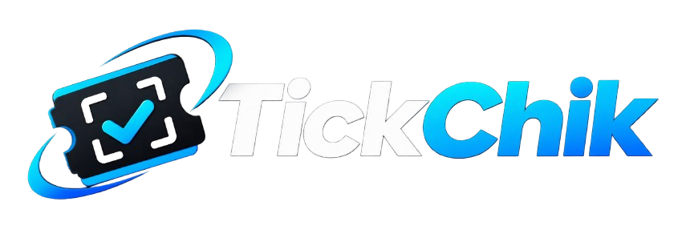

01 / LIVE
LIVE EXPERIENCESConcerts &
↗Concerts &
music festivals
Ticket tiers, digital passes and fast-moving entry gates.

From the first registration to the final QR scan, TickChik helps you bring people together — without the event-day chaos.
Whether it's 50 people in a room or thousands at a festival, we make registrations, access and attendee coordination feel effortless.
Ticket tiers, digital passes and fast-moving entry gates.

Guest lists, invite-only registration and attendee reports.

Participant registration, team categories and verified entry.

Simple sign-ups for meetups, campus events and cultural programs.

Collect registrations, manage capacity and welcome every participant.
Bring attendee details, ticket types and confirmations together in one simple process.
Verify each attendee with a unique QR ticket and keep your gate team moving.
Keep checking tickets when venue internet is unreliable. Sync scan records when connectivity returns.
Choose the support you need. TickChik can help with the registration journey, the entry experience and the details in between.
Custom registration pages, attendee information collection, ticket categories, capacity limits, confirmation emails and digital tickets — organised around the way your event works.
Unique QR codes for each registration, gate staff access, duplicate-scan alerts and an offline-first check-in workflow designed for venues with unreliable connectivity.
Gate planning, check-in desk coordination, attendee list management, on-site registration support and practical workflows for your event team.
Campaign-ready event pages, shareable registration links, attendee updates and post-registration communication to keep everyone informed.
Registration summaries, check-in counts, attendance exports and post-event insights to help organisers make better decisions next time.

Event venues are unpredictable. TickChik is designed around an offline-ready QR check-in workflow, so authorised gate staff can continue validating tickets when the network drops.
Give your organising team a better view of registrations, ticket categories and arrivals — without juggling scattered spreadsheets.
Dhaka · 12 December 2026
864 of 1,248 attendees
● Scanner status: Ready (demo)TickChik is an event registration and gate-management solution by Z-TechX — built to make event operations simpler, more organised and more welcoming.
We believe technology should solve real problems. From a campus workshop to a large public festival, organisers deserve tools that are practical, clear and reliable. Our focus is on useful digital workflows: registration, QR ticketing, offline-ready check-in and event insights.
Discover Z-TechX ↗Some quick answers about how TickChik can support your next event.
We can support conferences, workshops, concerts, festivals, sports events, campus programmes, community gatherings and corporate events.
Yes. The intended service includes event registration pages, attendee information collection and digital ticket or confirmation delivery. Payment gateway integration can be scoped for each deployment.
The planned gate workflow is offline-ready: event ticket data is securely made available to authorised scanners in advance, scans are recorded locally and synchronised when connectivity returns. This requires a production scanner app and backend sync logic.
Yes. Tell us about your venue, expected attendance and gate setup so we can discuss registration, check-in desk and event-day coordination requirements.
Contact Z-TechX with your event date, location, expected audience and the support you need. Our team can discuss a suitable setup.
Tell us what you're planning. We'll help you map out the registration and gate experience.
info@z-techx.com ↗